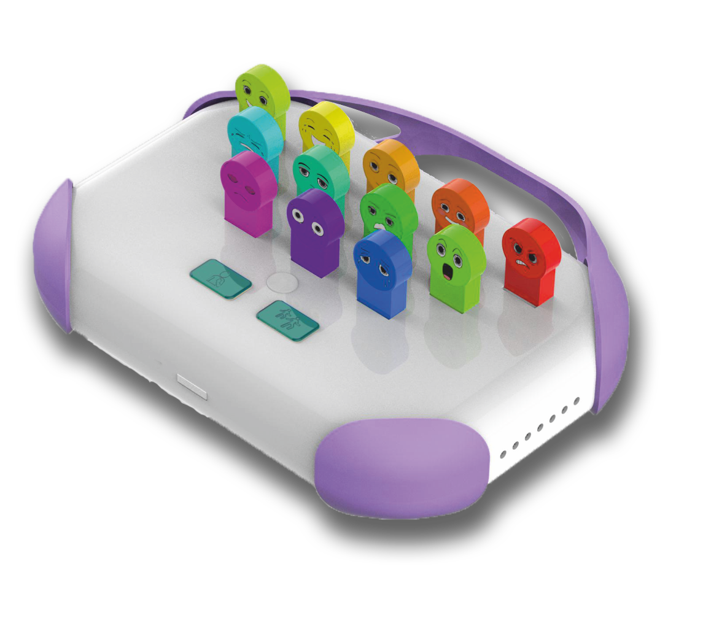
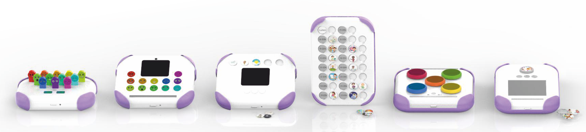

JUGUETES PARA NIÑOS CON TEA
Mi Trabajo de Fin de Grado en Ing. en diseño industrial y desarrollo del producto consiste en diseñar una plataforma/familia de juguetes que permita fomentar el desarrollo de las capacidades de personas con Trastorno del espectro autista(TEA).

Mi rol y Enfoque
Mi TFG se basa en el diseño de una familia de juguetes desarrollada mediante el Método de diseño de plataformas de producto. Este Método es iniciado con la identificación y definición de las necesidades de los usuarios, hasta el diseño detallado de los productos, considerando el dominio funcional y físico de los mismos. Y siendo complementado con la documentación necesaria para su fabricación: planos, mediciones, presupuesto y pliego de condiciones. A lo largo del proyecto, también realicé un estudio de mercado, analicé las tendencias del sector juguetero, las herramientas y técnicas de diseño, e hice una exploración del estado del arte del Trastorno del espectro autista.
Si tienes interés en conocer todos los detalles del proyecto, no dudes en escribirme.

El reto
El proyecto tiene como premisa diseñar un producto industrial para niños con TEA como Trabajo de Fin de Grado. El trastorno del espectro autista(TEA) es un desorden neurológico que causa alteraciones en la comunicación y comportamiento, lo que desempeña una interacción social atípica, afectando a la capacidad para relacionarse o incluso la capacidad del desarrollo cognitivo. Los niveles de gravedad del TEA se determinan en función del área de capacidad o desarrollo, distinguiendo entre Comunicación social (Capacidad afectiva, Comunicación del lenguaje verbal y Comunicación no verbal) o Características de la conducta (Patrones de comportamiento, Comportamiento corporal e Interacción con el exterior).
INVESTIGACIÓN
Para comenzar, se llevó a cabo una Investigación Secundaria caracterizada por el estudio del sector, las tendencias I+D+I, el estudio del TEA (etiología, diagnóstico, síndromes, categorías, necesidades y terapias) y el análisis de Metodologías de diseño.
ANÁLISIS
Los hallazgos más relevantes y punto de partida del proyecto fueron:
Cada año se incrementa el número de casos de niños con TEA. Actualmente, se da un caso por cada 68 niños y adolescente.
Las terapias pueden lograr el desarrollo de las capacidades. Son más efectivas si se llevan a cabo en edades tempranas y a diario.
Para lograr mejores resultados en el progreso, es fundamental extrapolar lo aprendido en las terapias a entornos donde el niño se siente cómodo (ej. el hogar).
Las terapias tiene en cuenta la edad, la gravedad de la afección autista y la presencia de retraso mental o retraso de lenguaje específico.
La gran mayoría de las empresas no desarrollan juguetes especializados en atender las necesidades de los niños con TEA.
ETAPAS DE DISEÑO
A continuación se define las etapas bajo las cuales se diseñó la plataforma de producto, la cual consiste en seis juguetes basados en las terapias existentes. 1. Dominio de necesidades Definición del segmento de mercado y el análisis de las necesidades se los usuarios, para establecer distinciones claves entre la población. Se identifican las necesidades asociadas a cada área del desarrollo y a las terapias. 2. Recolección de necesidades del cliente o requisitos del usuario. Identificación de las cualidades del producto. Se establece una relación entre las necesidades identificadas en la fase anterior y las terapias usadas para ayudar a los niños con TEA en su desarrollo. 3. Definición de los requisitos del sistema. Se establece la relación entre las terapias y los parámetros de diseño/ requisito (p. auditivo, p. visual, p. motor, reconocimiento de acierto) para cada producto. 4. Definición de la arquitectura de la plataforma del sistema genérico. Definición de cada uno de los juguetes en el domunio funcional. 5. Dominio conceptual. Identificación de las características generales y componentes específicos de los productos a partir de los requerimientos. 6. Diseño de detalle. Se evalúa la plataforma mediante los Índice de commonalidad. Y posteriormente se determinan aspectos concretos de la plataforma (materiales, elementos internos y externos). 7. Fenotipo del producto Dominio de fabricación, uso y fin de vida.
DESARROLLO Y DISEÑO
Esta familia de productos está compuesta por seis juguetes, cada uno de ellos basado en una serie de terapias que ayudan a solventar unas necesidades específicas. Estas necesidades corresponden a las carencias, dificultades o deficiencias que presentan los usuarios en función del área del desarrollo donde presenta alteración. Las áreas del desarrollo en la que se enfoca cada juguete son: Capacidad afectiva, Comunicación del lenguaje verbal, Comunicación no verbal, Patrones de comportamiento, Comportamiento corporal e Interacción con el exterior.

El usuarios para el que se diseña tienen hasta un máximo de 10 años. En el uso de los juguetes pueden requerir ,en algunos casos, la supervisión de adultos, ya sean padres o terapeutas. Algunos de estos productos también van a permitir la participación de más de un jugador, en especial otros niños como hermanos o compañeros para progresar en la comunicación social de forma más directa. El escenario de uso será espacios como el hogar, la escuela o los centros de educación especial.
JUGUETE 1
CAPACIDAD AFECTIVA
Este juguete enfocado al desarrollo de la capacidad afectiva permite dos modalidades de juego al girar la base del producto. Por una parte, los niños podrán reconocer y asociar las emociones y su intensidad al vivir situaciones específicas, aprendiendo gracias a un sistema de reconocimiento de acierto. Mientras que la otra modalidad permite el reconocimiento de expresiones faciales, que favorece a desarrollar su empatía.


Necesidades
Terápias
JUGUETE 2
COMUNICACIÓN NO VERBAL
Este juguete tiene el objetivo de potenciar la comunicación no verbal, esta resulta esencial para el éxito de las relaciones interpersonales. Los principios de su funcionamiento están basados en la actividad kinesia, que consiste en el campo que estudia los comportamientos corporales y los movimientos realizados a través del rostro y extremidades, dándole un significado determinado a nuestro mensaje y sirviendo de refuerzo a la comunicación verbal. Resultar muy útil para aquellos niños que no tengan la habilidad del habla, también ayudará en gran medida con los gestos reguladores de la interacción, el contacto visual y las expresiones faciales.


Necesidades
Terápias
JUGUETE 3
COMUNICACIÓN Y DESARROLLO DEL LENGUAJE VERBAL
El objetivo de este tercer juguete es mejorar las habilidades del lenguaje verbal. Para ello, se fomenta la adquisición de vocabulario y la construcción de oraciones sencillas. En un nivel de mayor dificultad, el niño mejorará su forma de expresarse mediante expresiones lingüísticas más complejas esto se logra de forma paralela al desarrollo de su imaginación creando historias. El juguete permitirá grabar la voz y escucharlo posteriormente.


Necesidades
Terápias
JUGUETE 4
PATRONES DE COMPORTAMIENTO
Este juguete permite que los niños aprendan a planificarse y ordenar actividades. Los usuarios adquirirán una mayor independencia y aprenderán a controlarse ante situaciones que alteren la rutina. Con la planificación, el niño se sentirá más cómodo y seguro al saber de ante mano las actividades que realizará en el día.


Necesidades
Terápias
JUGUETE 5
COMPORTAMIENTO CORPORAL
El juguete asociado al comportamiento corporal hace que los niños mejoren su capacidad motriz, y minimicen los movimientos repetitivos o estereotipias. Para ello, los principios de juego se basan en el método de la imitación. Se incluirá un reconocimiento de acierto y la adaptación de dificultad, o número de participantes. Basándonos en la terapia ABA, se establecerá una relación entre el estimulo y la respuesta, se practicará diversas y repetidas actividades, y se evaluará la respuesta de manera que los aciertos supondrán un aumento del grado de dificultad y la disminución de la dependencia. Este juguete ayudará al niño a reaccionar ante estímulos, mejorar su imaginación, desarrollar el juego imitativo social y a respetar los turnos de juego.


Necesidades
Terápias
JUGUETE 6
COMPORTAMIENTO EN LA INTERACCIÓN CON EL EXTERIOR
Este juguete está enfocado a que el niño adquiera la capacidad para captar ideas y conceptos mediante la asociación de imágenes. Permite seleccionar el área de conocimiento, mejorar sus reflejos, su capacidad de resolución de problemas y elegir el nivel de dificultad.